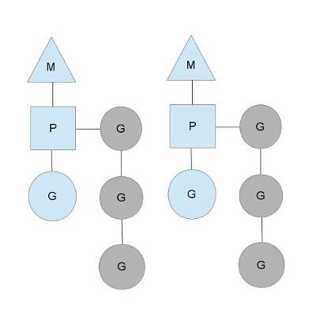

Go的协程
1. Go协程和线程的区别
资源调度
- 线程由内核调度，根据cpu时间片执行抢占式调度
- 协程由程序调度(runtime包)，执行协同式调度(2中会详述)
内存占用
- 执行线程所需的栈内存至少是MB级别
- 执行协程只需要4KB左右的栈内存
上下文切换
- 线程涉及到用户态和内核态的切换：需要切换通用寄存器(8个)，程序计数器PC，指令寄存器IR，地址寄存器AR，累加寄存器AC，状态寄存器EFLAGS等
- 协程上下文切换只涉及到栈指针和三个寄存器(程序计数器PC, 栈指针寄存器SP, 数据寄存器DX）的切换
2. Go协程调度

- M：内核线程
- G：goroutine，并发的最小逻辑单元，由程序创建
- P：处理器，执行G的上下文环境，每个P会维护一个本地的goroutine队列
goroutine有三个状态：
- waiting: 协程处于全局的队列等待调度
- runnable: 协程处于本地队列，等待执行
- running: 协程正在运行
2.1. G的创建
- go调用
runtime.newproc()方法来创建G - 首先，检查当前P的空闲队列中有没有可用的G，如果有，就直接从中取一个；如果没有，则分配一个新的G，挂载到P的本地队列中
- 获取了G之后，将调用参数保存到G的栈中，将SP, PC等上下文环境保存到G的sched域中
- 此时的G处于runnable状态，一旦分配到CPU，就可以进入running状态
2.2. G何时被调度
- 当G被创建时，会立即获得一次运行的机会
- 如果此时正在运行的P的数量没有达到上限，go会调用
runtime.wakep()方法唤醒P；然后调度器选择M绑定P来执行G，必要时会新建M 当此时正在运行的P数量到达上限时，G会进入本地队列等待，当队列前面的G处于以下几种状态时，会触发切换，进入waiting状态：
- 加锁
- io操作
- 系统调用
- 运行时间过长(runnable)
2.3. G的消亡
- 当G执行完毕返回后，go会调用
runtime.exit()方法回收G(包括回收栈指针, 清空寄存器SP、 PC...) - 然后将G放入P的空闲队列中，等待
runtime.newproc()方法取出
3. Go channel
channel是go协程通信的主要方式。channel不是队列，可以把它理解为一种信号模型(from William Kennedy)

channel分为以下两种类型：
- 一种是无缓冲的channel，在创建channel时不指定长度。无缓冲的channel若没有用户读取，在写入时会始终阻塞，通常可以作为保证信号使用
- 另一种是缓冲的channel，即buffer channel，在创建channel时指定长度(>=1)。buffer channel为空时会阻塞读，buffer channel满时会阻塞写，可以作为数据传输使用
当buffer channel的长度指定为1时，可以作为延迟保证信号使用(信号发送方发送信号后不阻塞等待接收方接收)

channel有以下三种状态：
- nil：初始化channel。无法读写
- open：通过make分配channel空间。可读可写
- close: 通过
close()关闭channel。close的channel != nil；可以继续从中读取数据，但是不能写入(panic)
3.1. 基于channel实现的异步日志模型
package main
import (
"fmt"
"io"
"os"
"strconv"
"sync"
)
var globalWg sync.WaitGroup
// Logger struct implement log
type Logger struct {
channel chan string
wg sync.WaitGroup
}
// NewLog return a new Logger
func NewLog(w io.Writer, cap int) *Logger {
l := Logger{
channel: make(chan string, cap),
}
l.wg.Add(1)
go func() {
defer l.wg.Done()
for v := range l.channel {
fmt.Fprintln(w, v)
}
fmt.Println("close")
}()
return &l
}
// Close close logger
func (l *Logger) Close() {
close(l.channel)
l.wg.Wait()
}
// Println print msg
func (l *Logger) Println(v string) {
select {
case l.channel <- v:
default:
fmt.Printf("output: %s\n", v)
}
}
func main() {
log := NewLog(os.Stdout, 10)
for i := 0; i < 12; i++ {
globalWg.Add(1)
go func(i int) {
defer globalWg.Done()
log.Println(strconv.Itoa(i))
}(i)
}
globalWg.Wait()
log.Close()
}
执行结果：
output: 11
0
5
1
2
3
4
8
6
7
9
10
close
- 可以看到，超过并发数的时候执行了default行为输出了
output: 11 - 当然，我们也可以自定义default行为，比如超过并发数的时候停等一小段时间再写入；或者是不设置default行为，超过并发时阻塞写入直到解除阻塞为止。
- 这个模型还可以结合协程池grpool，来做一个后台并发写入的日志系统
- 效率和安全始终是一对矛盾，异步日志虽然能很大程度提高程序效率(不需要等待io操作)；但是如果程序crash，在channel中尚未写入的数据就会丢失。因此在使用的时候也要注意channel的长度设置，如果需要guarantee的，甚至要设置成unbuffer(基本等于同步日志)或者buffer = 1。
4. Suggestion
- 单核过多线程未必会提高效率，更多的抢占式调度和上下文切换，有时反而会让效率降低；经验之谈：3 thread per core is best(from William Kennedy)
- 对于cpu-bound work，高并发未必会提高效率(cpu密集型工作的切换还是需要cpu来调度)
- 对于io-bound work，应该最大限度地利用并发来提高效率
参考链接：